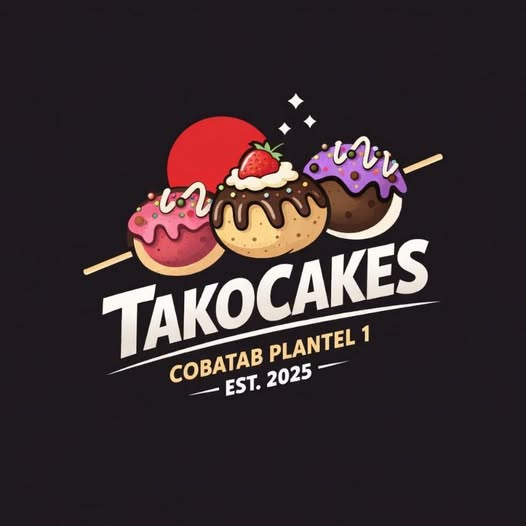
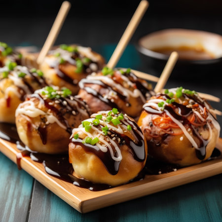
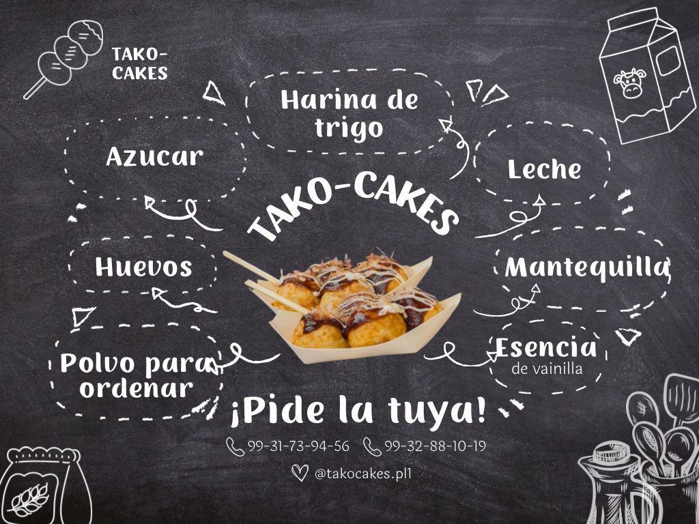
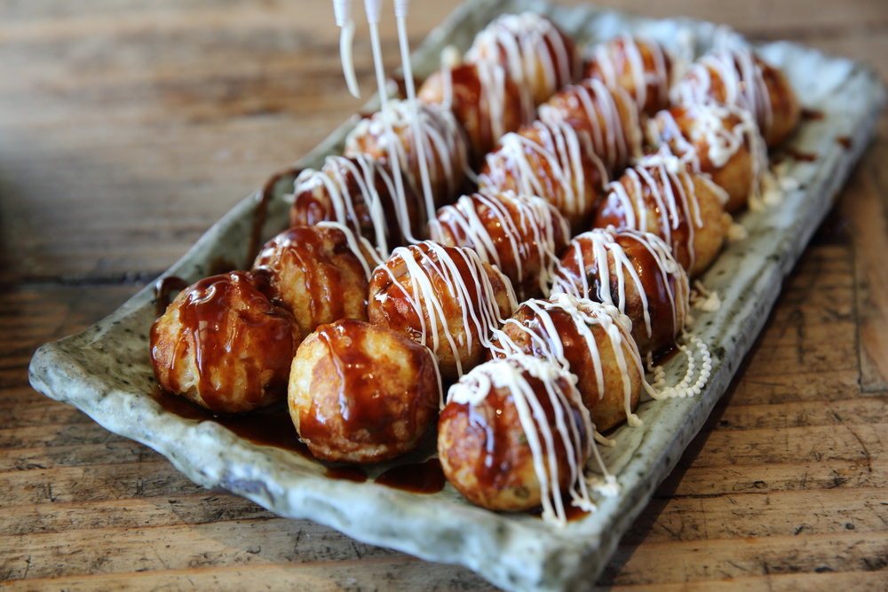

¿Quiénes somos?
Somos un equipo de estudiantes del Plantel 1, comprometidos con el desarrollo de un proyecto emprendedor innovador.

Conoce mas

¿En que consiste?
Este proyecto consiste en la introducción de takoyakis dentro del Plantel 1 como una nueva opción de snack durante el recreo.

¿Como surge la idea?
La idea surge al observar que la mayoría de los alumnos consumen alimentos rápidos y económicos, por lo que buscamos ofrecer algo diferente, llamativo y accesible.

¿Porque sabemos que te gustara?
A través de encuestas y análisis del comportamiento de compra, se pretende evaluar si el producto tendría buena aceptación y cómo adaptarlo a los gustos y presupuesto de los estudiantes